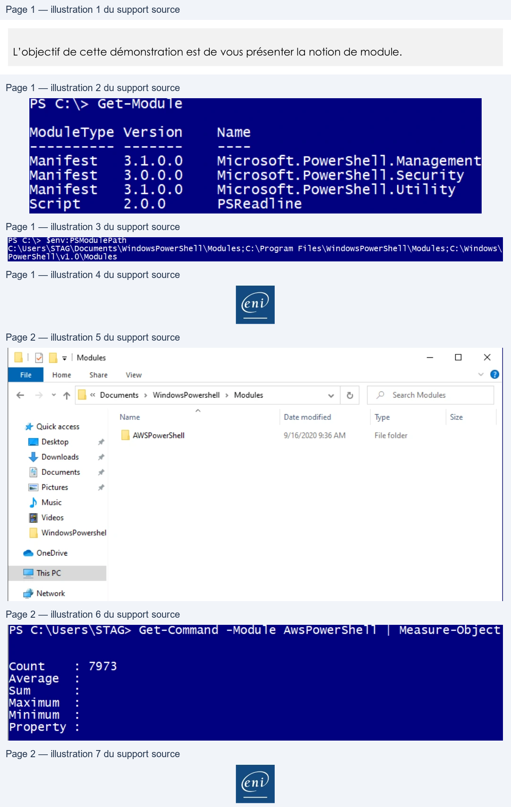

Transcription du document du Drive TSSR. La mise en forme est adaptée au Web ; les compléments IA du portail sont présentés séparément.
Initiation au Scripting avec PowerShell
Démonstration 07 du module 1
L’objectif de cette démonstration est de vous présenter la notion de module.
•
Les modules sont des fichiers portant l’extension .PSM1
• La commande Get-Module permet d’obtenir la liste des modules actuellement disponibles dans la console.
Pour ajouter un module à la console PowerShell,l il faut ajouter le fichier PSM1 dans un emplacement valide. Pour connaître les emplacements valides, on utilise la commande : $env :PsModulePath
On place ensuite le fichier PSM1 ou un dossier contenant un ensemble de fichiers.
Dans l’exemple, on utilise le module AWS permettant de gérer une infrastructure Amazon Web
Services depuis la console PowerShell.
Page 1/2
© ENI – Tous droits réservés
PS
C:\>
Get-Module
ModuleType Version
Name
Manifest
3.1.0.0
Microsoft. PowerShel1.Management
Manifest
3.0.0.0
Microsoft. PowerShell1.Security
Manifest
3.1.0.0
Microsoft. PowerShel1.Utility
Script
2.0.0
PSReadline
PS
C:\>
$env: PSModu
lePatl
PowerShe11\v1.0\Modules
E
Initiation au Scripting avec PowerShell
On importe ensuite le module dans la console avec la commande Import-Module.
On vérifie ensuite la bonne prise en charge avec la commande Get-Command -module AWSPOWERSHELL.
Le paramètre Measure-Object permet de compter le nombre de commandes.
Le module AwsPowershell ajoute presque 8000 commandes dans la console PowerShell.
Page 2/2
© ENI – Tous droits réservés
M
> | Modules
—
oO
x
Home
Share
View
e
€
*
#
« Documents
>
WindowsPowershell
>
Modules
v
©
Search Modules
Name
°
Date modified
Type
Size
gt Quick access
AWSPowerShell
9/16/2020 9:36 AM
File folder
EM Desktop
L Downloads
=|
Documents
=)
Pictures
À Music
B Videos
WindowsPowershel
@ OneDrive
EI This PC
co} Network
PS C:\> Import-Module -Name AWSPOWERSHELL
PS C:\Users\STAG> Get-Commana
-Moaule AwsPowersShe
Measure-Ob ject
Count
:
7973
Ave rage
c
sum
.
:
Maxi mum
c
Minimum
:
Property
c
